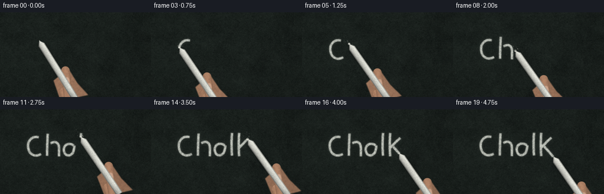
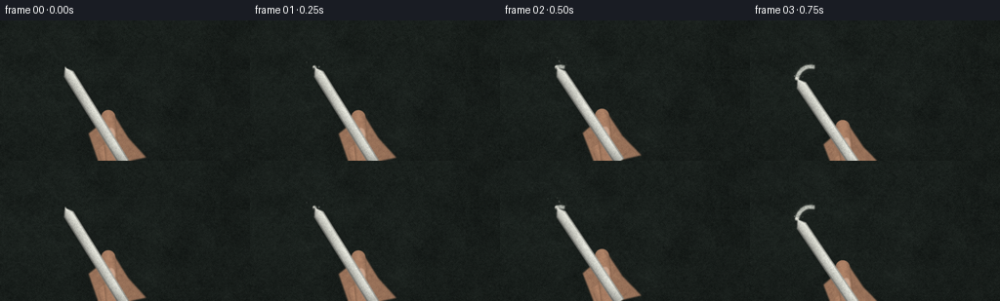
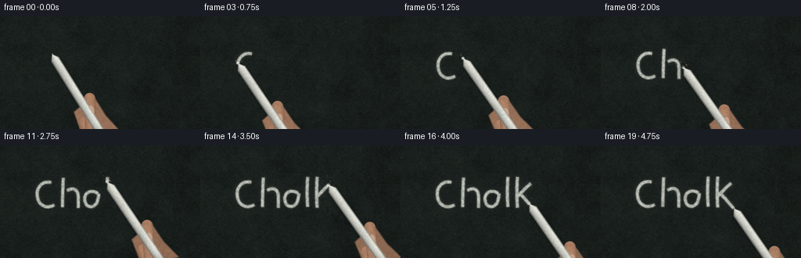
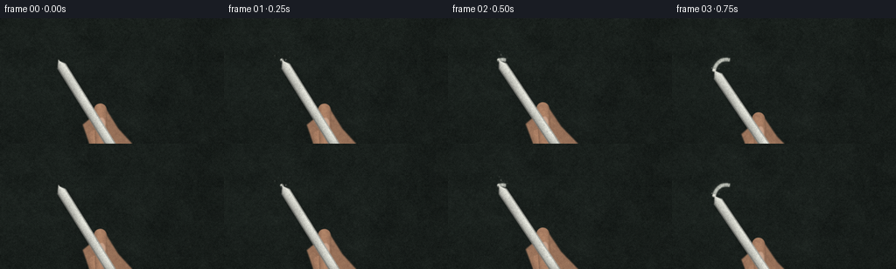

CODING AGENTS AS PIXEL WORLD MODELS
traex/DeepSeek-V4.1-Flash · phygen_031
点击播放 · 原生 RGB 像素
逐轮保存的候选
回放视频、检查图与代码变化。
每份候选均可单独播放。实际图片检查记录在下方工具轨迹中。
候选 01播放与检查图
点击播放 · 原生 RGB 像素


展开代码变化
--- 上一保存版本
+++ 本次保存版本
@@ -0,0 +1,587 @@
+"""Procedural close-up of white chalk writing on a rough blackboard."""
+
+from __future__ import annotations
+
+from pathlib import Path
+
+import numpy as np
+from PIL import Image, ImageDraw, ImageFilter
+from scipy.ndimage import gaussian_filter
+
+import artifact_io
+
+
+ROOT = Path(__file__).resolve().parent
+W, H, N, FPS = 256, 144, 20, 4.0
+S = 4 # Supersampled working resolution.
+RNG = np.random.default_rng(3107)
+
+
+def _smoothstep(edge0: float, edge1: float, x: np.ndarray) -> np.ndarray:
+ t = np.clip((x - edge0) / (edge1 - edge0), 0.0, 1.0)
+ return t * t * (3.0 - 2.0 * t)
+
+
+def _fractal_noise(
+ shape: tuple[int, int],
+ rng: np.random.Generator,
+ octaves: tuple[tuple[float, float], ...],
+) -> np.ndarray:
+ """Build zero-mean fractal noise from smoothly enlarged random fields."""
+ h, w = shape
+ total = np.zeros(shape, dtype=np.float32)
+ norm = 0.0
+ for sigma, weight in octaves:
+ small_h = max(3, int(h / sigma))
+ small_w = max(3, int(w / sigma))
+ field = rng.standard_normal((small_h, small_w)).astype(np.float32)
+ image = Image.fromarray(field, mode="F").resize((w, h), Image.Resampling.BICUBIC)
+ total += np.asarray(image, dtype=np.float32) * weight
+ norm += weight
+ total /= norm
+ return total
+
+
+def _make_board() -> np.ndarray:
+ """Create a dark slate surface with grain, eraser haze, and scratches."""
+ h, w = H * S, W * S
+ yy, xx = np.mgrid[0:h, 0:w].astype(np.float32)
+
+ broad = _fractal_noise((h, w), RNG, ((160, 0.34), (72, 0.26), (28, 0.22), (9, 0.18)))
+ grain = _fractal_noise((h, w), RNG, ((5.5, 0.42), (2.5, 0.36), (1.35, 0.22)))
+ fine = RNG.standard_normal((h, w)).astype(np.float32)
+ fine = gaussian_filter(fine, 0.55)
+
+ # Slate green-black base, with a soft light falloff from the upper left.
+ light = 0.93 + 0.13 * (1.0 - xx / w) + 0.035 * (1.0 - yy / h)
+ base = np.empty((h, w, 3), dtype=np.float32)
+ base[..., 0] = 25.0
+ base[..., 1] = 31.0
+ base[..., 2] = 28.0
+ base *= light[..., None]
+ base += broad[..., None] * np.array([4.0, 4.7, 4.2], dtype=np.float32)
+ base += grain[..., None] * np.array([3.4, 3.8, 3.5], dtype=np.float32)
+ base += fine[..., None] * np.array([2.2, 2.5, 2.3], dtype=np.float32)
+
+ # Faint horizontal eraser bands leave a soft chalk haze on the board.
+ haze = np.zeros((h, w), dtype=np.float32)
+ for _ in range(9):
+ cy = RNG.uniform(0.08, 0.88) * h
+ thickness = RNG.uniform(3.0, 13.0) * S
+ length = RNG.uniform(0.35, 0.95) * w
+ cx = RNG.uniform(0.0, 1.0) * w
+ angle = RNG.normal(-0.025, 0.045)
+ ca, sa = np.cos(angle), np.sin(angle)
+ xr = (xx - cx) * ca + (yy - cy) * sa
+ yr = -(xx - cx) * sa + (yy - cy) * ca
+ band = np.exp(-0.5 * (yr / thickness) ** 2) * (np.abs(xr) < length / 2)
+ haze += band * RNG.uniform(0.012, 0.045)
+ haze = gaussian_filter(haze, 1.1 * S)
+ haze *= 0.75 + 0.25 * gaussian_filter(RNG.standard_normal((h, w)), 3.0 * S)
+ base += haze[..., None] * np.array([52.0, 57.0, 54.0], dtype=np.float32)
+
+ # A few long, shallow eraser scratches and tiny pores.
+ scratches = Image.new("L", (w, h), 0)
+ sd = ImageDraw.Draw(scratches)
+ for _ in range(44):
+ y = RNG.uniform(0.03, 0.96) * h
+ x0 = RNG.uniform(-0.05, 0.55) * w
+ length = RNG.uniform(0.12, 0.55) * w
+ slope = RNG.normal(0.0, 0.012) * w
+ value = int(RNG.uniform(7, 25))
+ sd.line((x0, y, x0 + length, y + slope), fill=value, width=max(1, int(RNG.uniform(0.5, 1.5) * S)))
+ scratch_arr = gaussian_filter(np.asarray(scratches, dtype=np.float32) / 255.0, 0.45 * S)
+ base += scratch_arr[..., None] * np.array([26.0, 30.0, 28.0], dtype=np.float32)
+
+ pores = Image.new("L", (w, h), 0)
+ pd = ImageDraw.Draw(pores)
+ for _ in range(520):
+ px, py = RNG.uniform(0, w), RNG.uniform(0, h)
+ r = RNG.uniform(0.25, 1.15) * S
+ pd.ellipse((px - r, py - r, px + r, py + r), fill=int(RNG.uniform(22, 85)))
+ pore_arr = gaussian_filter(np.asarray(pores, dtype=np.float32) / 255.0, 0.35 * S)
+ base -= pore_arr[..., None] * np.array([14.0, 15.0, 14.0], dtype=np.float32)
+
+ # Vignette keeps attention on the chalk and writing.
+ nx = (xx / (w - 1) - 0.5) * 2.0
+ ny = (yy / (h - 1) - 0.5) * 2.0
+ vignette = 1.0 - 0.12 * np.clip(nx * nx * 0.42 + ny * ny * 0.28, 0.0, 1.0)
+ base *= vignette[..., None]
+ return np.clip(base, 0, 255).astype(np.float32)
+
+
+def _cubic(p0, p1, p2, p3, n: int = 20) -> list[tuple[float, float]]:
+ pts = []
+ for i in range(n + 1):
+ t = i / n
+ u = 1.0 - t
+ pts.append(
+ (
+ u**3 * p0[0] + 3 * u * u * t * p1[0] + 3 * u * t * t * p2[0] + t**3 * p3[0],
+ u**3 * p0[1] + 3 * u * u * t * p1[1] + 3 * u * t * t * p2[1] + t**3 * p3[1],
+ )
+ )
+ return pts
+
+
+def _build_strokes() -> list[dict]:
+ """Hand-built lowercase lettering, in writing order."""
+ strokes: list[dict] = []
+
+ def add(points, draw=True):
+ clean = []
+ for point in points:
+ if not clean or np.hypot(point[0] - clean[-1][0], point[1] - clean[-1][1]) > 0.2:
+ clean.append(point)
+ strokes.append({"points": clean, "draw": draw})
+
+ # c
+ add(
+ _cubic((66, 48), (55, 45), (47, 54), (48, 64), 12)
+ + _cubic((48, 64), (49, 77), (60, 82), (70, 76), 12)[1:]
+ )
+ add([(73, 73), (80, 54), (80, 48), (80, 56), (80, 78)], draw=False)
+ # h: stem, then the arched shoulder and right leg.
+ add(_cubic((81, 42), (80.5, 52), (80, 65), (80, 79), 12))
+ add([(80, 65), (86, 58)], draw=False)
+ add(
+ _cubic((86, 58), (94, 53), (100, 57), (100, 66), 9)
+ + _cubic((100, 66), (100, 72), (100, 76), (100, 80), 6)[1:]
+ )
+ add([(103, 73), (110, 54), (112, 44), (112, 55), (111, 78)], draw=False)
+ # a: small open loop with a straight finish.
+ add(
+ _cubic((125, 62), (117, 56), (108, 60), (108, 69), 9)
+ + _cubic((108, 69), (108, 79), (119, 82), (124, 73), 9)[1:]
+ )
+ add(_cubic((124, 73), (125, 69), (126, 65), (126, 62), 6))
+ add([(126, 62), (126, 77), (127, 80)], draw=False)
+ add([(129, 80), (129, 80)])
+ # l
+ add(_cubic((137, 41), (136, 53), (136, 68), (137, 79), 12))
+ add([(140, 75), (147, 57)], draw=False)
+ # k: tall stem and two quick diagonals.
+ add(_cubic((149, 41), (148, 54), (148, 68), (149, 80), 12))
+ add(_cubic((149, 66), (153, 62), (159, 55), (166, 49), 8))
+ add([(154, 64), (162, 72), (169, 81)], draw=False)
+ add(_cubic((154, 64), (158, 68), (164, 75), (169, 81), 8))
+ return strokes
+
+
+def _resample_strokes(strokes: list[dict]) -> tuple[list[dict], float]:
+ output = []
+ total = 0.0
+ for stroke in strokes:
+ pts = np.asarray(stroke["points"], dtype=np.float32)
+ seg = np.linalg.norm(np.diff(pts, axis=0), axis=1)
+ length = float(seg.sum())
+ output.append({"points": pts, "draw": stroke["draw"], "length": length})
+ total += length
+ return output, total
+
+
+def _point_at(strokes: list[dict], distance: float) -> tuple[float, float, float, float]:
+ """Return tip position and local path tangent at cumulative path distance."""
+ remaining = max(0.0, distance)
+ for stroke in strokes:
+ length = stroke["length"]
+ if remaining <= length or stroke is strokes[-1]:
+ pts = stroke["points"]
+ seg = np.linalg.norm(np.diff(pts, axis=0), axis=1)
+ cumulative = np.r_[0.0, np.cumsum(seg)]
+ t = min(remaining, length)
+ j = int(np.clip(np.searchsorted(cumulative, t, side="right") - 1, 0, len(seg) - 1))
+ local = (t - cumulative[j]) / max(seg[j], 1e-5)
+ p = pts[j] * (1 - local) + pts[j + 1] * local
+ d = pts[j + 1] - pts[j]
+ n = float(np.linalg.norm(d))
+ if n < 1e-5:
+ d = np.array([1.0, 0.0])
+ n = 1.0
+ return float(p[0]), float(p[1]), float(d[0] / n), float(d[1] / n)
+ remaining -= length
+ pts = strokes[-1]["points"]
+ return float(pts[-1, 0]), float(pts[-1, 1]), 1.0, 0.0
+
+
+def _draw_deposit(strokes: list[dict], distance: float, size: tuple[int, int]) -> np.ndarray:
+ """Rasterize the part of the lettering already written."""
+ w, h = size
+ mask = Image.new("L", (w, h), 0)
+ draw = ImageDraw.Draw(mask)
+ remaining = max(0.0, distance)
+ for stroke in strokes:
+ if remaining <= 0:
+ break
+ pts = stroke["points"]
+ seg = np.linalg.norm(np.diff(pts, axis=0), axis=1)
+ cumulative = np.r_[0.0, np.cumsum(seg)]
+ amount = min(remaining, stroke["length"])
+ if stroke["draw"] and amount > 0:
+ full_pts = [tuple((p * S).round()) for p in pts[cumulative <= amount + 1e-5]]
+ if full_pts:
+ draw.line(full_pts, fill=255, width=int(4.1 * S), joint="curve")
+ # Extend the final segment exactly to the moving tip.
+ j = int(np.clip(np.searchsorted(cumulative, amount, side="right") - 1, 0, len(seg) - 1))
+ local = (amount - cumulative[j]) / max(seg[j], 1e-5)
+ p = pts[j] * (1 - local) + pts[j + 1] * local
+ if full_pts:
+ draw.line([full_pts[-1], tuple((p * S).round())], fill=255, width=int(4.1 * S))
+ remaining -= stroke["length"]
+ arr = np.asarray(mask, dtype=np.float32) / 255.0
+ return arr
+
+
+def _chalk_texture(mask: np.ndarray) -> np.ndarray:
+ """Turn a clean stroke mask into rough, granular chalk deposit."""
+ h, w = mask.shape
+ speck = _fractal_noise((h, w), RNG, ((9.0, 0.30), (3.0, 0.35), (1.15, 0.35)))
+ edge_noise = gaussian_filter(RNG.standard_normal((h, w)).astype(np.float32), 0.9 * S)
+ soft = gaussian_filter(mask, 0.55 * S)
+ rough_edge = np.clip(soft + 0.11 * edge_noise, 0.0, 1.0)
+ gate = _smoothstep(-0.36, 0.24, speck)
+ core = np.clip(rough_edge * (0.76 + 0.24 * gate), 0.0, 1.0)
+ halo = gaussian_filter(mask, 2.4 * S) * (0.11 + 0.05 * gate)
+ return np.clip(core * 0.89 + halo, 0.0, 0.95)
+
+
+def _rotated_segment_fields(
+ size: tuple[int, int], tip: np.ndarray, direction: np.ndarray, length: float
+) -> tuple[np.ndarray, np.ndarray, np.ndarray, tuple[int, int, int, int]]:
+ """Return along-axis, across-axis, and local bbox arrays for a chalk body."""
+ w, h = size
+ d = direction / max(np.linalg.norm(direction), 1e-5)
+ n = np.array([-d[1], d[0]], dtype=np.float32)
+ end = tip + d * length
+ pad = 12.0 * S
+ x0 = max(0, int(np.floor(min(tip[0], end[0]) - pad)))
+ x1 = min(w, int(np.ceil(max(tip[0], end[0]) + pad)))
+ y0 = max(0, int(np.floor(min(tip[1], end[1]) - pad)))
+ y1 = min(h, int(np.ceil(max(tip[1], end[1]) + pad)))
+ yy, xx = np.mgrid[y0:y1, x0:x1].astype(np.float32)
+ dx = xx - tip[0]
+ dy = yy - tip[1]
+ along = dx * d[0] + dy * d[1]
+ across = dx * n[0] + dy * n[1]
+ return along, across, n, (x0, y0, x1, y1)
+
+
+def _chalk_layer(tip: tuple[float, float], direction: tuple[float, float]) -> tuple[np.ndarray, np.ndarray, tuple[int, int, int, int]]:
+ """Render a slightly worn white chalk cylinder with a chisel tip."""
+ w, h = W * S, H * S
+ tipv = np.array(tip, dtype=np.float32) * S
+ d = np.array(direction, dtype=np.float32)
+ d /= max(np.linalg.norm(d), 1e-5)
+ along, across, n, box = _rotated_segment_fields((w, h), tipv, d, 116.0 * S)
+ x0, y0, x1, y1 = box
+
+ width = 5.6 * S
+ taper = np.clip(along / (8.0 * S), 0.22, 1.0)
+ half_width = width * taper
+ slant = 0.8 * S + 1.15 * across
+ inside = (along >= slant) & (along <= 116.0 * S) & (np.abs(across) <= half_width)
+
+ v = np.clip(across / np.maximum(half_width, 1e-3), -1.0, 1.0)
+ z = np.sqrt(np.clip(1.0 - v * v, 0.0, 1.0))
+ normal_light = np.clip(-0.68 * v + 0.73 * z, 0.0, 1.0)
+ body = 0.68 + 0.31 * normal_light
+ body *= 0.98 + 0.02 * np.sin(along * 0.033 + 0.7)
+ end_shadow = 1.0 - 0.13 * _smoothstep(90.0 * S, 116.0 * S, along)
+ body *= end_shadow
+
+ mottle = _fractal_noise((y1 - y0, x1 - x0), RNG, ((5.0, 0.5), (1.4, 0.5)))
+ body *= 1.0 + 0.035 * mottle
+ edge_ao = np.clip((np.abs(across) - half_width * 0.72) / max(0.3 * S, 1e-3), 0.0, 1.0)
+ body *= 1.0 - 0.22 * edge_ao
+ alpha = inside.astype(np.float32)
+ alpha = gaussian_filter(alpha, 0.42 * S)
+ color = np.empty((y1 - y0, x1 - x0, 3), dtype=np.float32)
+ color[..., 0] = np.clip(235.0 * body, 0, 255)
+ color[..., 1] = np.clip(236.0 * body, 0, 255)
+ color[..., 2] = np.clip(226.0 * body, 0, 255)
+ # Chalk is not perfectly clean: sparse gray flecks remain visible.
+ flecks = _fractal_noise((y1 - y0, x1 - x0), RNG, ((2.2, 0.7), (1.0, 0.3)))
+ color *= (0.92 + 0.08 * (flecks > -0.45))[..., None]
+ return color, alpha, box
+
+
+def _chalk_shadow(tip: tuple[float, float], direction: tuple[float, float]) -> tuple[np.ndarray, tuple[int, int, int, int]]:
+ w, h = W * S, H * S
+ tipv = np.array(tip, dtype=np.float32) * S
+ d = np.array(direction, dtype=np.float32)
+ d /= max(np.linalg.norm(d), 1e-5)
+ # Shadow is cast slightly down-right, with a softer penumbra farther from the tip.
+ along, across, _, box = _rotated_segment_fields((w, h), tipv + np.array([2.3, 3.8]) * S, d, 116.0 * S)
+ width = 5.8 * S * np.clip(along / (8.0 * S), 0.28, 1.0)
+ shadow = (np.abs(across) < width) & (along > -1.0 * S) & (along < 116.0 * S)
+ shadow = gaussian_filter(shadow.astype(np.float32), 2.2 * S)
+ shadow *= 0.18 + 0.15 * np.clip(1.0 - along / (70.0 * S), 0.0, 1.0)
+ return shadow, box
+
+
+def _capsule_field(
+ size: tuple[int, int],
+ p0: tuple[float, float],
+ p1: tuple[float, float],
+ radius: float,
+) -> tuple[np.ndarray, np.ndarray, tuple[int, int, int, int]]:
+ w, h = size
+ a = np.array(p0, dtype=np.float32) * S
+ b = np.array(p1, dtype=np.float32) * S
+ pad = radius + 5.0 * S
+ x0 = max(0, int(min(a[0], b[0]) - pad))
+ x1 = min(w, int(max(a[0], b[0]) + pad))
+ y0 = max(0, int(min(a[1], b[1]) - pad))
+ y1 = min(h, int(max(a[1], b[1]) + pad))
+ if x1 <= x0 or y1 <= y0:
+ return np.zeros((1, 1), dtype=np.float32), np.zeros((1, 1), dtype=np.float32), (0, 0, 0, 0)
+ yy, xx = np.mgrid[y0:y1, x0:x1].astype(np.float32)
+ ab = b - a
+ t = np.clip(((xx - a[0]) * ab[0] + (yy - a[1]) * ab[1]) / max(np.dot(ab, ab), 1e-3), 0.0, 1.0)
+ cx = a[0] + t * ab[0]
+ cy = a[1] + t * ab[1]
+ dist = np.hypot(xx - cx, yy - cy)
+ # Distance across the finger, useful for cylindrical shading.
+ length = max(np.linalg.norm(ab), 1e-3)
+ across = ((xx - a[0]) * -ab[1] + (yy - a[1]) * ab[0]) / length
+ field = np.clip((radius - dist) / (0.8 * S) + 0.5, 0.0, 1.0)
+ return field, across, (x0, y0, x1, y1)
+
+
+def _skin_color(shape: tuple[int, int], seed: int) -> np.ndarray:
+ h, w = shape
+ skin_noise = _fractal_noise((h, w), np.random.default_rng(seed), ((11.0, 0.4), (4.0, 0.35), (1.3, 0.25)))
+ out = np.empty((h, w, 3), dtype=np.float32)
+ out[..., 0] = 169.0 + 8.0 * skin_noise
+ out[..., 1] = 126.0 + 7.0 * skin_noise
+ out[..., 2] = 99.0 + 5.0 * skin_noise
+ return out
+
+
+def _composite(base: np.ndarray, color: np.ndarray, alpha: np.ndarray, box: tuple[int, int, int, int]) -> None:
+ x0, y0, x1, y1 = box
+ if x1 <= x0 or y1 <= y0:
+ return
+ a = alpha[..., None]
+ base[y0:y1, x0:x1] = base[y0:y1, x0:x1] * (1.0 - a) + color * a
+
+
+def _draw_hand(base: np.ndarray, tip: tuple[float, float], direction: tuple[float, float]) -> None:
+ """A cropped thumb and index finger pinching the lower end of the chalk."""
+ d = np.array(direction, dtype=np.float32)
+ d /= max(np.linalg.norm(d), 1e-5)
+ n = np.array([-d[1], d[0]], dtype=np.float32)
+ tipv = np.array(tip, dtype=np.float32)
+
+ # Soft shadow from the hand onto the board.
+ palm_shadow = Image.new("L", (W * S, H * S), 0)
+ psd = ImageDraw.Draw(palm_shadow)
+ shadow_center = tipv + d * 81.0 + n * 8.0 + np.array([2.5, 4.0])
+ psd.ellipse(
+ (
+ (shadow_center[0] - 34) * S,
+ (shadow_center[1] - 18) * S,
+ (shadow_center[0] + 39) * S,
+ (shadow_center[1] + 27) * S,
+ ),
+ fill=60,
+ )
+ shadow = gaussian_filter(np.asarray(palm_shadow, dtype=np.float32) / 255.0, 5.0 * S)
+ base *= (1.0 - 0.38 * shadow[..., None])
+
+ # Palm/back of hand: only the lower-right portion is in frame.
+ palm = Image.new("L", (W * S, H * S), 0)
+ pd = ImageDraw.Draw(palm)
+ grip = tipv + d * 79.0
+ p0 = grip + n * 15.0
+ p1 = grip - n * 17.0
+ pd.polygon(
+ [
+ tuple((p0 + d * -8.0) * S),
+ tuple((p0 + d * 27.0 + n * 8.0) * S),
+ tuple((p1 + d * 44.0 - n * 5.0) * S),
+ tuple((p1 + d * 17.0) * S),
+ tuple((p1 + d * -12.0) * S),
+ ],
+ fill=255,
+ )
+ palm_arr = gaussian_filter(np.asarray(palm, dtype=np.float32) / 255.0, 0.65 * S)
+ box = (0, 0, W * S, H * S)
+ palm_color = _skin_color((H * S, W * S), 812)
+ # Broad form shading across the palm.
+ yy, xx = np.mgrid[0 : H * S, 0 : W * S].astype(np.float32)
+ palm_shade = 0.82 + 0.17 * np.clip((W * S - xx) / (W * S), 0, 1)
+ palm_color *= palm_shade[..., None]
+ _composite(base, palm_color, palm_arr * 0.99, box)
+
+ # Index finger lies just behind the chalk.
+ index_a = grip + d * 18.0 + n * 10.0
+ index_b = grip + d * 54.0 + n * 17.0
+ field, across, fbox = _capsule_field((W * S, H * S), tuple(index_a), tuple(index_b), 8.2 * S)
+ x0, y0, x1, y1 = fbox
+ if x1 > x0 and y1 > y0:
+ col = _skin_color((y1 - y0, x1 - x0), 913)
+ local_v = np.clip(across / (8.2 * S), -1.0, 1.0)
+ shade = 0.77 + 0.27 * np.sqrt(np.clip(1.0 - local_v * local_v, 0.0, 1.0))
+ col *= shade[..., None]
+ _composite(base, col, field * 0.98, fbox)
+
+ # Thumb crosses in front near the grip, with a visible nail.
+ thumb_a = grip + d * 41.0 + n * 15.0
+ thumb_b = grip - d * 12.0 - n * 11.0
+ field, across, fbox = _capsule_field((W * S, H * S), tuple(thumb_a), tuple(thumb_b), 7.3 * S)
+ x0, y0, x1, y1 = fbox
+ if x1 > x0 and y1 > y0:
+ col = _skin_color((y1 - y0, x1 - x0), 1011)
+ local_v = np.clip(across / (7.3 * S), -1.0, 1.0)
+ shade = 0.74 + 0.29 * np.sqrt(np.clip(1.0 - local_v * local_v, 0.0, 1.0))
+ col *= shade[..., None]
+ _composite(base, col, field * 0.99, fbox)
+
+ # Nail sits on the upper-facing side of the thumb.
+ nail_center = thumb_b * 0.68 + thumb_a * 0.32 - n * 1.3
+ nail = Image.new("L", (W * S, H * S), 0)
+ nd = ImageDraw.Draw(nail)
+ nd.ellipse(
+ (
+ (nail_center[0] - 4.1) * S,
+ (nail_center[1] - 7.0) * S,
+ (nail_center[0] + 4.1) * S,
+ (nail_center[1] + 7.0) * S,
+ ),
+ fill=255,
+ )
+ nail = np.asarray(nail, dtype=np.float32) / 255.0
+ nail = gaussian_filter(nail, 0.55 * S) * 0.78
+ nail_col = np.empty((H * S, W * S, 3), dtype=np.float32)
+ nail_col[:] = np.array([211.0, 174.0, 151.0], dtype=np.float32)
+ _composite(base, nail_col, nail, box)
+
+ # Small crease at the thumb joint.
+ crease = Image.new("L", (W * S, H * S), 0)
+ cd = ImageDraw.Draw(crease)
+ c0 = grip + d * 34.0 + n * 10.0
+ c1 = grip + d * 34.0 - n * 11.0
+ cd.line((tuple(c0 * S), tuple(c1 * S)), fill=90, width=int(1.0 * S))
+ crease_arr = gaussian_filter(np.asarray(crease, dtype=np.float32) / 255.0, 0.45 * S)
+ base *= (1.0 - 0.23 * crease_arr[..., None])
+
+
+def _add_contact_details(base: np.ndarray, tip: tuple[float, float], frame: int, writing: bool) -> None:
+ """Small contact sparkle, chips, and airborne chalk dust."""
+ if not writing:
+ return
+ overlay = Image.new("RGBA", (W * S, H * S), (0, 0, 0, 0))
+ draw = ImageDraw.Draw(overlay)
+ rng = np.random.default_rng(4000 + frame)
+ tx, ty = tip[0] * S, tip[1] * S
+ # Bright pressure point at the chalk-board contact.
+ draw.ellipse((tx - 2.3 * S, ty - 2.3 * S, tx + 2.3 * S, ty + 2.3 * S), fill=(244, 243, 233, 78))
+ # A small cluster of airborne dust, denser near the contact.
+ for _ in range(14):
+ angle = rng.uniform(-2.9, 0.1)
+ dist = rng.uniform(1.0, 14.0) * S
+ px = tx + np.cos(angle) * dist + rng.normal(0, 1.5) * S
+ py = ty + np.sin(angle) * dist + rng.normal(0, 1.5) * S
+ rad = rng.uniform(0.22, 0.9) * S
+ alpha = int(rng.uniform(28, 120) * (1.0 - dist / (18.0 * S)))
+ draw.ellipse((px - rad, py - rad, px + rad, py + rad), fill=(232, 232, 222, max(8, alpha)))
+ overlay = overlay.filter(ImageFilter.GaussianBlur(0.25 * S))
+ arr = np.asarray(overlay, dtype=np.float32)
+ alpha = arr[..., 3:4] / 255.0
+ base[:] = base * (1.0 - alpha) + arr[..., :3] * alpha
+
+
+def _camera_finish(image: np.ndarray, frame: int) -> np.ndarray:
+ """Apply a barely perceptible push-in, sensor grain, and final downsample."""
+ pil = Image.fromarray(np.clip(image, 0, 255).astype(np.uint8), mode="RGB")
+ # Gentle camera push keeps the scene alive without disturbing the composition.
+ scale = 1.0 + 0.018 * frame / (N - 1)
+ nw, nh = int(round(W * S * scale)), int(round(H * S * scale))
+ pil = pil.resize((nw, nh), Image.Resampling.BICUBIC)
+ left = (nw - W * S) // 2
+ top = (nh - H * S) // 2 + int(0.8 * S * frame / (N - 1))
+ pil = pil.crop((left, top, left + W * S, top + H * S))
+ pil = pil.resize((W, H), Image.Resampling.LANCZOS)
+ arr = np.asarray(pil, dtype=np.float32)
+ grain_rng = np.random.default_rng(5500 + frame)
+ grain = grain_rng.normal(0.0, 1.1, (H, W, 1)).astype(np.float32)
+ arr += grain
+ return np.clip(arr, 0, 255).astype(np.uint8)
+
+
+def render_frames() -> np.ndarray:
+ board = _make_board()
+ strokes, total_length = _resample_strokes(_build_strokes())
+
+ # Writing occupies roughly the first 4.1 seconds; the last frames reveal the lift.
+ start_frame = 1
+ end_frame = 17
+ frames = []
+ for frame in range(N):
+ if frame <= start_frame:
+ progress = 0.0
+ tip = _point_at(strokes, 0.0)
+ writing = frame >= start_frame
+ elif frame >= end_frame:
+ progress = total_length
+ tip = _point_at(strokes, total_length)
+ writing = False
+ else:
+ u = (frame - start_frame) / (end_frame - start_frame)
+ # Ease in/out slightly, while keeping the chalk moving at all times.
+ eased = 0.5 - 0.5 * np.cos(np.pi * u)
+ progress = total_length * (0.12 * u + 0.88 * eased)
+ tip = _point_at(strokes, progress)
+ writing = True
+
+ image = board.copy()
+
+ # Chalk marks already made.
+ deposit = _draw_deposit(strokes, progress, (W * S, H * S))
+ deposit_alpha = _chalk_texture(deposit)
+ chalk_col = np.empty((H * S, W * S, 3), dtype=np.float32)
+ chalk_col[:] = np.array([218.0, 221.0, 211.0], dtype=np.float32)
+ image = image * (1.0 - deposit_alpha[..., None] * 0.93) + chalk_col * (deposit_alpha[..., None] * 0.93)
+
+ tx, ty, px, py = tip
+ tangent = np.array([px, py], dtype=np.float32)
+ # Chalk points down and to the right from its writing tip.
+ direction = np.array([0.53, 0.85], dtype=np.float32)
+ if frame > start_frame:
+ # Let the stick respond subtly to the writing direction.
+ direction = 0.88 * direction + 0.12 * np.array([0.82 + 0.14 * px, 0.58 + 0.12 * py], dtype=np.float32)
+ direction /= np.linalg.norm(direction)
+
+ shadow, sbox = _chalk_shadow((tx, ty), tuple(direction))
+ x0, y0, x1, y1 = sbox
+ image[y0:y1, x0:x1] *= (1.0 - shadow[..., None])
+
+ # The hand sits behind the stick, then the stick is laid over its fingers.
+ _draw_hand(image, (tx, ty), tuple(direction))
+ chalk_color, chalk_alpha, cbox = _chalk_layer((tx, ty), tuple(direction))
+ _composite(image, chalk_color, chalk_alpha, cbox)
+
+ # A tiny chip at the contact edge gives the tip a used, irregular shape.
+ if writing:
+ chip_rng = np.random.default_rng(720 + frame // 3)
+ cx = tx + chip_rng.uniform(-0.8, 0.8)
+ cy = ty + chip_rng.uniform(-0.6, 0.8)
+ chip = Image.new("L", (W * S, H * S), 0)
+ cd = ImageDraw.Draw(chip)
+ r = chip_rng.uniform(0.65, 1.25) * S
+ cd.ellipse(((cx * S - r), (cy * S - r), (cx * S + r), (cy * S + r)), fill=210)
+ chip_arr = gaussian_filter(np.asarray(chip, dtype=np.float32) / 255.0, 0.35 * S)
+ chip_col = np.empty((H * S, W * S, 3), dtype=np.float32)
+ chip_col[:] = np.array([235.0, 234.0, 222.0], dtype=np.float32)
+ _composite(image, chip_col, chip_arr, (0, 0, W * S, H * S))
+
+ _add_contact_details(image, (tx, ty), frame, writing)
+ frames.append(_camera_finish(image, frame))
+ return np.asarray(frames, dtype=np.uint8)
+
+
+if __name__ == "__main__":
+ frames = render_frames()
+ artifact_io.save(frames, ROOT)
+ print(f"saved {frames.shape} RGB frames to {ROOT}")
候选 02播放与检查图
点击播放 · 原生 RGB 像素


展开代码变化
--- 上一保存版本
+++ 本次保存版本
@@ -272,21 +272,22 @@
tipv = np.array(tip, dtype=np.float32) * S
d = np.array(direction, dtype=np.float32)
d /= max(np.linalg.norm(d), 1e-5)
- along, across, n, box = _rotated_segment_fields((w, h), tipv, d, 116.0 * S)
+ chalk_length = 128.0 * S
+ along, across, n, box = _rotated_segment_fields((w, h), tipv, d, chalk_length)
x0, y0, x1, y1 = box
width = 5.6 * S
taper = np.clip(along / (8.0 * S), 0.22, 1.0)
half_width = width * taper
slant = 0.8 * S + 1.15 * across
- inside = (along >= slant) & (along <= 116.0 * S) & (np.abs(across) <= half_width)
+ inside = (along >= slant) & (along <= chalk_length) & (np.abs(across) <= half_width)
v = np.clip(across / np.maximum(half_width, 1e-3), -1.0, 1.0)
z = np.sqrt(np.clip(1.0 - v * v, 0.0, 1.0))
normal_light = np.clip(-0.68 * v + 0.73 * z, 0.0, 1.0)
body = 0.68 + 0.31 * normal_light
body *= 0.98 + 0.02 * np.sin(along * 0.033 + 0.7)
- end_shadow = 1.0 - 0.13 * _smoothstep(90.0 * S, 116.0 * S, along)
+ end_shadow = 1.0 - 0.13 * _smoothstep(102.0 * S, chalk_length, along)
body *= end_shadow
mottle = _fractal_noise((y1 - y0, x1 - x0), RNG, ((5.0, 0.5), (1.4, 0.5)))
@@ -311,9 +312,9 @@
d = np.array(direction, dtype=np.float32)
d /= max(np.linalg.norm(d), 1e-5)
# Shadow is cast slightly down-right, with a softer penumbra farther from the tip.
- along, across, _, box = _rotated_segment_fields((w, h), tipv + np.array([2.3, 3.8]) * S, d, 116.0 * S)
+ along, across, _, box = _rotated_segment_fields((w, h), tipv + np.array([2.3, 3.8]) * S, d, 128.0 * S)
width = 5.8 * S * np.clip(along / (8.0 * S), 0.28, 1.0)
- shadow = (np.abs(across) < width) & (along > -1.0 * S) & (along < 116.0 * S)
+ shadow = (np.abs(across) < width) & (along > -1.0 * S) & (along < 128.0 * S)
shadow = gaussian_filter(shadow.astype(np.float32), 2.2 * S)
shadow *= 0.18 + 0.15 * np.clip(1.0 - along / (70.0 * S), 0.0, 1.0)
return shadow, box
@@ -376,7 +377,7 @@
# Soft shadow from the hand onto the board.
palm_shadow = Image.new("L", (W * S, H * S), 0)
psd = ImageDraw.Draw(palm_shadow)
- shadow_center = tipv + d * 81.0 + n * 8.0 + np.array([2.5, 4.0])
+ shadow_center = tipv + d * 90.0 + n * 8.0 + np.array([2.5, 4.0])
psd.ellipse(
(
(shadow_center[0] - 34) * S,
@@ -392,7 +393,7 @@
# Palm/back of hand: only the lower-right portion is in frame.
palm = Image.new("L", (W * S, H * S), 0)
pd = ImageDraw.Draw(palm)
- grip = tipv + d * 79.0
+ grip = tipv + d * 86.0
p0 = grip + n * 15.0
p1 = grip - n * 17.0
pd.polygon(
@@ -415,8 +416,8 @@
_composite(base, palm_color, palm_arr * 0.99, box)
# Index finger lies just behind the chalk.
- index_a = grip + d * 18.0 + n * 10.0
- index_b = grip + d * 54.0 + n * 17.0
+ index_a = grip + d * 12.0 + n * 10.0
+ index_b = grip + d * 48.0 + n * 17.0
field, across, fbox = _capsule_field((W * S, H * S), tuple(index_a), tuple(index_b), 8.2 * S)
x0, y0, x1, y1 = fbox
if x1 > x0 and y1 > y0:
@@ -427,7 +428,7 @@
_composite(base, col, field * 0.98, fbox)
# Thumb crosses in front near the grip, with a visible nail.
- thumb_a = grip + d * 41.0 + n * 15.0
+ thumb_a = grip + d * 34.0 + n * 15.0
thumb_b = grip - d * 12.0 - n * 11.0
field, across, fbox = _capsule_field((W * S, H * S), tuple(thumb_a), tuple(thumb_b), 7.3 * S)
x0, y0, x1, y1 = fbox
候选 03播放与检查图
点击播放 · 原生 RGB 像素

展开代码变化
--- 上一保存版本
+++ 本次保存版本
@@ -35,7 +35,7 @@
small_h = max(3, int(h / sigma))
small_w = max(3, int(w / sigma))
field = rng.standard_normal((small_h, small_w)).astype(np.float32)
- image = Image.fromarray(field, mode="F").resize((w, h), Image.Resampling.BICUBIC)
+ image = Image.fromarray(field).resize((w, h), Image.Resampling.BICUBIC)
total += np.asarray(image, dtype=np.float32) * weight
norm += weight
total /= norm
@@ -495,7 +495,7 @@
def _camera_finish(image: np.ndarray, frame: int) -> np.ndarray:
"""Apply a barely perceptible push-in, sensor grain, and final downsample."""
- pil = Image.fromarray(np.clip(image, 0, 255).astype(np.uint8), mode="RGB")
+ pil = Image.fromarray(np.clip(image, 0, 255).astype(np.uint8))
# Gentle camera push keeps the scene alive without disturbing the composition.
scale = 1.0 + 0.018 * frame / (N - 1)
nw, nh = int(round(W * S * scale)), int(round(H * S * scale))
可观测工具轨迹
实际执行的命令与返回图片。
命令 1exit 0
/bin/bash -c "sed -n '1,240p' prompt.txt"
命令 2exit 0
/bin/bash -c "sed -n '1,260p' GENERATION_RULES.md"
命令 3exit 0
/bin/bash -c 'cat task_spec.json'
命令 4exit 0
/bin/bash -c "find . -maxdepth 2 -type f -printf '%p\\n' | sort | sed -n '1,240p'"
命令 5exit 0
/bin/bash -c "sed -n '1,280p' artifact_io.py"
命令 6exit 0
/bin/bash -c "sed -n '1,280p' player_template.html"
命令 7exit 0
/bin/bash -c "python - <<'PY' import importlib.util for m in ['numpy','PIL','cv2','scipy','imageio','moviepy']: print(m, bool(importlib.util.find_spec(m))) PY"
命令 8exit 0
/bin/bash -c "fc-list | sed -n '1,120p'"
命令 9exit 0
/bin/bash -c "python - <<'PY' import importlib.util for m in ['torch','cairo','skimage']: print(m, bool(importlib.util.find_spec(m))) PY"
命令 10exit 0
/bin/bash -c 'df -h . && free -h'
命令 11exit 0
/bin/bash -c 'command -v chafa || true; command -v viu || true; command -v jp2 || true; command -v img2txt || true'
命令 12exit 1
/bin/bash -c 'python generate.py'
命令 13exit 1
/bin/bash -c 'python generate.py'
命令 14exit 0
/bin/bash -c 'python generate.py'
命令 15exit 0
/bin/bash -c "python - <<'PY'
from PIL import Image
im=Image.open('inspection.png')
print(im.size)
# enlarge only, preserving contact sheet layout for detailed inspection
im.resize((im.width*2,im.height*2),Image.Resampling.NEAREST).save('.tmp/inspection2x.png')
PY"命令 16exit 0
/bin/bash -c "command -v tesseract || true; python - <<'PY'
from PIL import Image
import numpy as np
for i in [0,1,4,8,12,16,19]:
a=np.asarray(Image.open(f'frames/{i:02d}.png')).astype(float)
print(i, 'mean',a.mean((0,1)).round(1),'minmax',a.min(),a.max(),'white>180',(a.mean(2)>180).sum(),'skin',((a[...,0]>a[...,1]*1.18)&(a[...,0]>a[...,2]*1.35)&(a[...,0]>80)).sum())
PY"命令 17exit 0
/bin/bash -c "python - <<'PY'
from PIL import Image
import numpy as np
for i in [0,4,8,12,16,19]:
im=Image.open(f'frames/{i:02d}.png')
# binary chalk/paper area thumbnail rendered as unicode blocks for direct visual inspection
a=np.asarray(im).mean(2)
a=(a>100).astype(np.uint8)
im2=Image.fromarray(a*255).resize((64,36),Image.Resampling.BOX)
q=np.asarray(im2)
print('\\nFRAME',i)
for row in q[::2]:
print(''.join('##' if v>120 else ' ' for v in row))
PY"命令 18exit 0
/bin/bash -c "python - <<'PY'
from PIL import Image
import numpy as np
im=Image.open('frames/19.png').crop((40,35,178,88)).convert('L')
a=np.asarray(im)
# threshold at chalk deposit, avoid background
b=a>95
# downsample 1x2 with max, so shape 53 rows x 69 cols
for row in b[::2]:
print(''.join('##' if v else ' ' for v in row))
PY"命令 19exit 0
/bin/bash -c "python - <<'PY'
from PIL import Image
import numpy as np
for i in [0,4,8,12,16,19]:
im=Image.open(f'frames/{i:02d}.png').convert('L')
a=np.asarray(im)
print(i, [(p, round(float(a[p[1]-3:p[1]+4,p[0]-3:p[0]+4].mean()),1)) for p in [(49,64),(80,58),(100,66),(124,73),(137,79),(154,64)]])
PY"命令 20exit 0
/bin/bash -c 'python generate.py'
命令 21exit 0
/bin/bash -c "python - <<'PY'
from PIL import Image
import numpy as np
for i in [0,4,8,12,16,19]:
im=Image.open(f'frames/{i:02d}.png')
a=np.asarray(im)
skin=((a[...,0]>a[...,1]*1.18)&(a[...,0]>a[...,2]*1.35)&(a[...,0]>80))
white=(a.mean(2)>150)
ys,xs=np.where(skin)
print(i, 'skin',skin.sum(), 'bbox', (xs.min(),ys.min(),xs.max(),ys.max()) if len(xs) else None, 'bright',white.sum())
PY"命令 22exit 0
/bin/bash -c "python - <<'PY'
from PIL import Image
import numpy as np
for i in [0,4,8,12,16,19]:
a=np.asarray(Image.open(f'frames/{i:02d}.png')).astype(float)
r,g,b=a[...,0],a[...,1],a[...,2]
# colored-pixel thumbnail: C=skin, W=chalk
skin=(r>g*1.15)&(r>b*1.3)&(r>70)
white=(a.mean(2)>115)
for name,m in [('skin',skin),('white',white)]:
im=Image.fromarray((m*255).astype('uint8')).resize((64,36),Image.Resampling.BOX)
print('\\n',i,name)
q=np.asarray(im)
for row in q[::2]: print(''.join('##' if v>45 else ' ' for v in row))
PY"命令 23exit 0
/bin/bash -c "python - <<'PY'
from PIL import Image
import numpy as np
prev=None
for i in range(20):
a=np.asarray(Image.open(f'frames/{i:02d}.png')).astype(np.int16)
if prev is not None:
d=np.abs(a-prev)
print(f'{i-1:02d}->{i:02d}: changed={np.any(d>0,axis=2).sum():5d} mean_abs={d.mean():.3f} p99={np.percentile(d,99):.1f}')
prev=a
PY"命令 24exit 0
/bin/bash -c 'python generate.py'
命令 25exit 0
/bin/bash -c "python - <<'PY'
from pathlib import Path
from PIL import Image
import json, numpy as np
spec=json.loads(Path('task_spec.json').read_text())
files=sorted(Path('frames').glob('*.png'))
assert len(files)==spec['frames'], len(files)
frames=[]
for p in files:
im=Image.open(p)
assert im.mode=='RGB' and im.size==(spec['width'],spec['height']), (p,im.mode,im.size)
frames.append(np.asarray(im))
frames=np.stack(frames)
z=np.load('pixels.npz')['pixels']
assert z.shape==(144,256,20), z.shape
assert frames.shape==(20,144,256,3) and frames.dtype==np.uint8
assert Path('index.html').is_file() and Path('inspection.png').is_file() and Path('transition_check.png').is_file()
print('contract ok:',frames.shape, 'range',frames.min(),frames.max())
print('index bytes',Path('index.html').stat().st_size)
print('first/final image means',frames[0].mean(axis=(0,1)).round(2),frames[-1].mean(axis=(0,1)).round(2))
PY"命令 26exit 0
/bin/bash -c 'git status --short && ls -lh generate.py frames/00.png frames/19.png index.html inspection.png pixels.npz'
保存候选 3 份；完成命令 26 次；可验证图片返回 0 张。原始 API 响应与完整日志保留在本地。